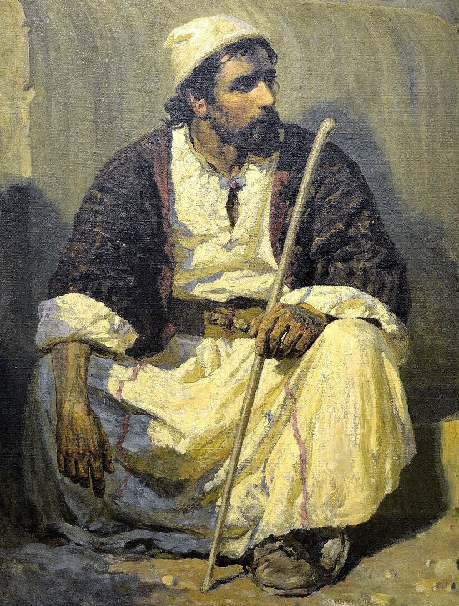
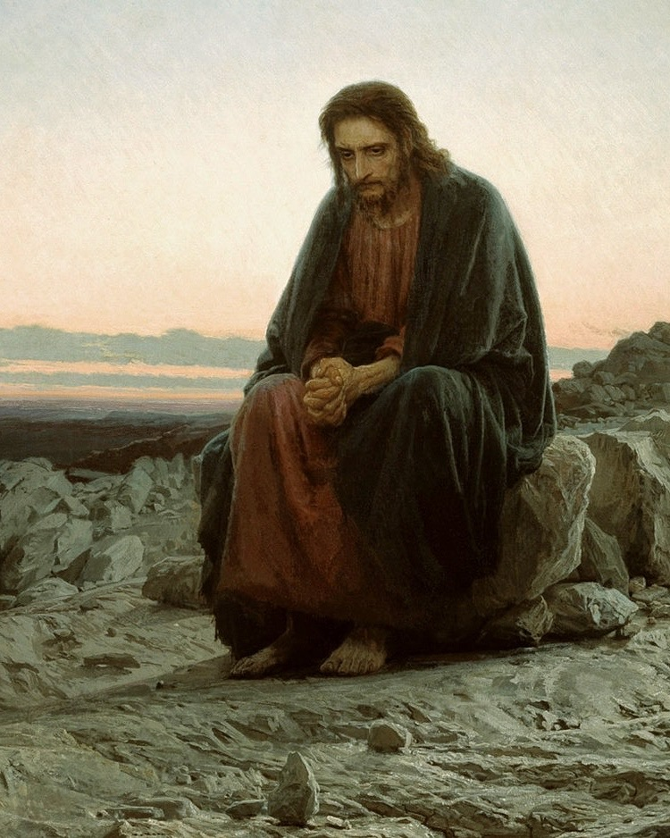

Христос Поленова и Христос Крамского. Две мои яркие, но, по-личному, очень разные истории восприятия.


Поленов


Крамской
Христа Поленова (фрагмент картины Христос и грешница, поленовское самоназвание — Кто из вас без греха?) я увидел впервые, когда картина приезжала в Екатеринбург, лет 10 назад. Она произвела на меня очень сильное впечатление, я стоял перед ней наверное час! Смешались разные чувства: и художнический восторг и радость от света и цвета и странное теплое ощущение от Христа, скорее как от человека (по аналогии с булгаковским Иешуа Ганоцри)… Короче, ЭСТЕТИЧЕСКИЙ ОРГАЗМ.
Христос Крамского (Христос в пустыне) висит в Третьяковке и понятно я видел его не раз, но… Однажды, где-то год назад, я заехал в Лаврушинский переулок с конкретной целью, посмотреть кое-что из Борисова-Мусатова и проходил через зал Крамского. И тут я увидел его, (картина висит на торцевой стене посередине)… остановился, сел на скамейку и просидел… даже не помню сколько времени. Меня окатывало попеременно волнами дрожи, странного желания встать и убежать, печального спокойствия, экзистенциальной тоски, желания заплакать или позвонить маме и еще много другого, что трудно озвучить… В этот день до Борисова-Мусатова я не дошел… ЭТИКО-ЭСТЕТИЧЕСКИЙ УДАР.
Такие сильные и такие разные. По разному влияют на нас, но… суть одна. Получается, важнейшая экзистенциальная функция искусства: помочь человеку выйти после взаимодействия с ним не таким как раньше — осознавая себя как причину там, где до этого взаимодействия человек осознавал себя лишь как следствие…
Иначе говоря, бывают такие моменты, когда сходятся звёзды: текущее психическое состояние, жизненные обстоятельства, магия света, инобытие самой картины… и нам удаётся прожить искусство по-особенному, по-настоящему. Прожить так, что кажется, боже, где же были до этого мои глаза? Но вся фишка в том, что такой момент — это не просто случайное пересечение событий. Это результат ВСЕГО вашего опыта взаимодействия с искусством и жизнью, сконцентрированный в «заслуженном прорыве», в нужное время и в нужном месте. Ну, по крайней мере, я так думаю.